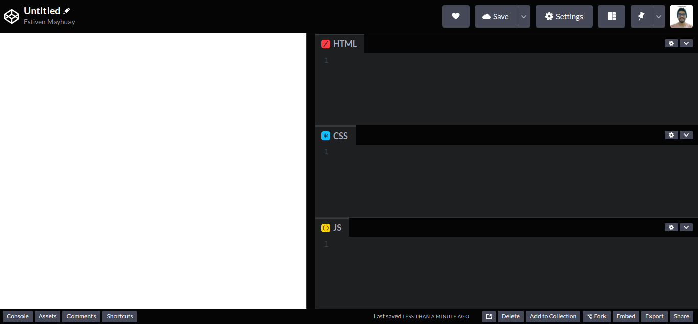
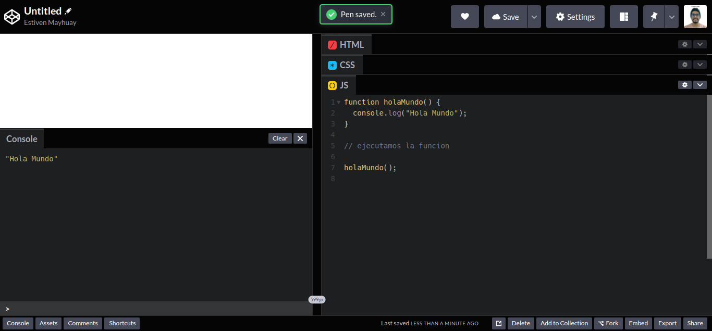
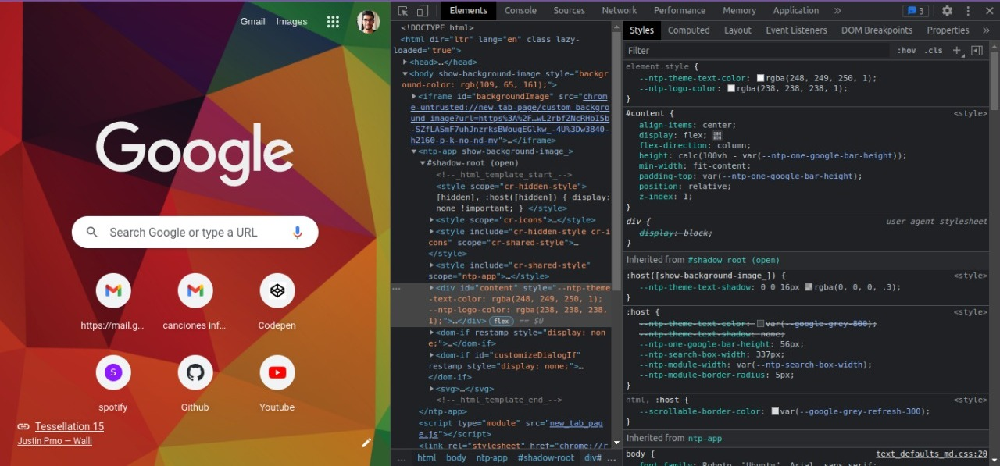
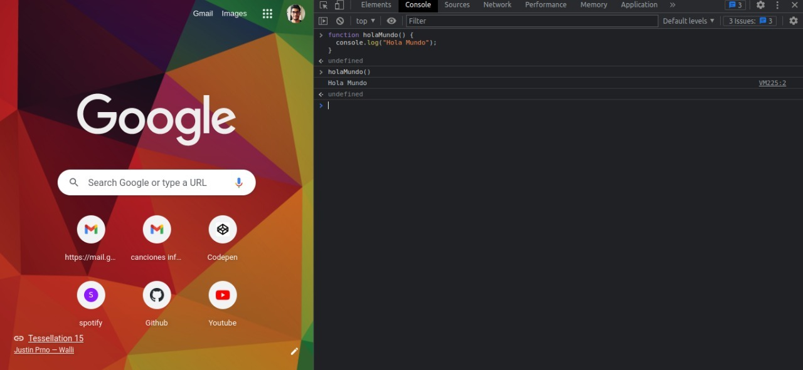
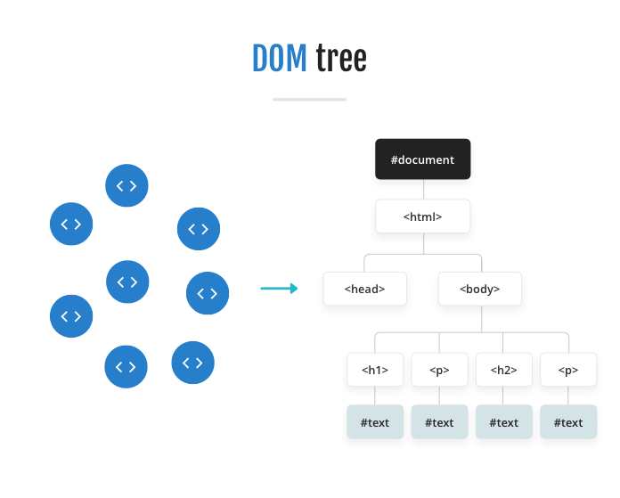

JavaScript
Indice
- Tipos de datos en JS
- Diferencias entre var, let y const
- Hoisting
- Operadores
- Operadores de Asignacion
- Operadores de Comparacion
- Operadores Aritmeticos
- Operadores de Cadenas
- Operador Ternario
- Condicional if else
- Condicional if else if
- Sentencia switch
- Bucle for
- Bucle for in
- Bucle for of
- Bucle while
- Bucle do while
- Herramientas para programador
- Metodos Array
- DOM
- Que es el DOM?
- Metodos para acceder a tags html
- document.getElementById
- document.getElementsByClassName
- document.getElementsByTagName
- document.querySelector
- document.querySelectorAll
- Metodos para crear elementos html
- Metodos para agregar elementos html
- Ejercicios JavaScript
Tipos de datos JS
String
Representa datos de texto, es decir conjunto de caracteres.
let nombre = "Hairton";
let apellido = "Mayhuay";
let email = "hairton@gmail.com";
Integer
Este tipo de dato nos permite guardar enteros y numeros con punto decimal.
let edad = 20;
let peso = 60.5;
let estatura = 1.72;
Boolean
Este tipo de dato consta de dos estados 1 true y 0 false.
let activo = true;
let offline = false;
Null
Este tipo especial de dato en javascript significa que es un dato que ha sido declarado explicitmente como vacio o nulo.
let numero = null;
console.log(numero + 1); // 1
Undefined
Este tipo de dato implica que una variable no ha sido inicializada, es decir que no se le ha asignado un valor.
let numero = undefined;
console.log(numero + 1); // NaN (Not a Number)
Object
Este tipo de dato complejo que consta de key & value (clave - valor), podemos decir que un objeto puede ser una persona, animal, cosa, etc
// Ojbeto Persona
let persona = {
name: "Hairton",
phone: 948255841,
email: "hairton@gmail.com",
online: true,
};
// key - value
// name - hairton
// phone - 948255841
// ... - ...
// para acceder a los valores del objeto Persona
// debemos usar "la clave value"
console.log(persona.name); // Hairton
console.log(persona.phone); // 948255841
console.log(persona.email); // hairton@gmail.com
console.log(persona.online); // true
Array
Es un dato de tipo object, en el cual podemos guardar un conjunto de elementos variados, todo ello almacenado en una variable. Por ejemplo:
let carros = [
"BMW",
"Mercedes-Benz",
"Audi",
"Lexus",
"Renault",
"Ford",
"Opel",
"Seat",
];
console.log(carros); // (8) ['BMW', 'Mercedes-Benz', 'Audi', 'Lexus', 'Renault', 'Ford', 'Opel', 'Seat']
Ahora bien veamos como podemos crear un array
// foma 1
let nombres = new Array();
// forma 2
let animales = [];
// forma 3
let edades = new Array(15, 20, 40, 80, 07);
// forma 4
let peso = new Array(5); // este array podra tener 5 elemntos
Pero solo hemos inicializado el array nos falta colocar elementos dentro del array. Sigamos con el ejemplo anterior
nombres.push("hairton");
nombres.push("andrea");
nombres.push("carlos");
console.log(nombres); // (3) ['hairton', 'andrea', 'carlos']
El metodo push nos permite colocar elementos dentro de un array.
Diferencias entre var, let y const
Que es var?
Permite declarar variables en javascript. Sin embargo, presenta inconvenientes con el hoisting, el cual es la forma en que javascript interpreta tu codigo. Veamos algunas casuisticas.
1) Si declaras var en el contexto global (window), esta variable estara disponible para todas las funciones o el documento javascript entero.
En este caso la variable name, se encuentra en el contexto global y puede ser accedido no solo por el console.log, sino que tambien por otras funciones. Esto no es malo, pero veamos la siguiente casuistica.
var name = "Estiven";
function sayHello() {
return "Hello " + name;
}
console.log(name); // Estiven
console.log(window.name); // Estiven
console.log(sayHello()); // "Hello Estiven"
2) var nos permite redeclarar una variable y asignarle otro valor, lo cual es un poco peligroso ya que podemos generar errores a futuro en nuestra logica y codigo.
La variable age se encuentra dentro del contexto global por ello en el primer y segundo console.log, muestra 22, luego que se ejecuta la funcion sayAge, este age es redeclarado dentro del contexto de la funcion sayAge, y por ello en el tercer console.log muestra 20. Si no queda claro vamos por otro ejemplo.
var age = 22;
function sayAge() {
var age = 20;
return "I'm " + age;
}
console.log(age); // 22
console.log(window.age); // 22
console.log(sayAge()); // "I'm 20"
En este caso estamos redeclarando la misma variable age, pero asignandole una nueva edad, esta variable age, ya no se encuentra en el contexto global, sino en el contexto de la funcion sayAge.
function sayAge() {
var age = 22;
var age = 20;
return "I'm " + age;
}
console.log(age); // age is not defined in the context global
console.log(window.age); // undefined
console.log(sayAge()); // "I'm 20"
3) Haciendo referencia un poco mas al hoisting, veamos que sucede cuando se quiere mostrar el valor de una variable con var antes de ser declarada
En esta oportunidad quiero mostrar el valor de la variable lastName, pero esta me devuelve undefined, debido a que javascript mediante el hoisting, lleva todas las declaraciones de variables, funciones, clases, etc al inicio del script.
En el caso de var lleva la declaracion de la variable lastName, pero no su valor, por lo cual javascript coloca undefined
console.log(lastName); // undefined
var lastName = "Mayhuay";
console.log(lastName); // Mayhuay
Desde ES6 (ECMAScript 2015) se recomienda el uso de let y const, debido a que no presenta inconvenientes con el hoisting como es el caso de var. Sin embargo, puedes seguir usando var, pero teniendo en cuenta las casuisticas mencionadas.
Que es let?
Permite declarar variables al igual que var y es una mejora al mismo. Con let puedes declarar variables que viviran dentro del scope de una funcion, class, etc, es decir no podra ser accedido desde afuera de su scope (contexto).
el primer console.log, no muestra nada debido a que no existe name en el contexto global, solo en el contexto de sayHello
function sayHello() {
let name = "Estiven";
return "Hello, " + name;
}
console.log(name); //
console.log(sayHello()); // Hello Estiven
1) Con let podemos evitar guardar las variables declaradas como parte del contexto global (window)
let age = 20;
console.log(age); // 20;
console.log(window.age); // undefined
2) Si deseas redeclarar una variable como haciamos con var, con el let no es posible, esto es de gran ayuda ya que evita errores.
let age = 20;
let age = 22;
// Error 'age' has already been declared
// Ya fue declarado
console.log(age);
Pero si podemos crear variables con el mismo nombre en diferentes scopes.
let age = 20;
function sayAge() {
let age = 22;
return age;
}
console.log(age); // 20
console.log(sayAge()); // 22
3) En el caso del hoisting con let no podemos acceder al valor de una variable si no fue previamente definida.
console.log(lastName); // Error lastName is not defined
let lastName = "Mayhuay";
Que es const?
Son variables que mantienen valores constantes, tienen las mismas caracteristicas de let con la diferencia de que no puedes actulizarla.
Una variable const si o si debe ser inicializada.
const name; // Error Missing initializer in const declaration
const PI = 3.14;
console.log(PI); // 3.14
Podemos declarar constantes que no necesariamente pueden ser matematicas. sino tambien objetos que segun nuestro proyecto no queremos que cambien.
Por ejemplo, un objeto persona
const person = {
name: "Estiven",
lastName: "Mayhuay",
age: 22,
address: {
city: "Lima",
country: "Peru",
},
};
console.log(person);
/*
{name: 'Estiven', lastName: 'Mayhuay', age: 22, address: {…}}
address: {city: 'Lima', country: 'Peru'}
age: 22
lastName: "Mayhuay"
name: "Estiven"
[[Prototype]]: Object
*/
Pero, esto no quiere decir que no podamos cambiar sus valores, en el caso de objetos podemos cambiar la edad.
const person = {
name: "Estiven",
lastName: "Mayhuay",
age: 22,
address: {
city: "Lima",
country: "Peru",
},
};
console.log(person);
/*
{name: 'Estiven', lastName: 'Mayhuay', age: 22, address: {…}}
address: {city: 'Lima', country: 'Peru'}
age: 22
lastName: "Mayhuay"
name: "Estiven"
[[Prototype]]: Object
*/
person.age = 24;
console.log(person);
/*
{name: 'Estiven', lastName: 'Mayhuay', age: 22, address: {…}}
address: {city: 'Lima', country: 'Peru'}
age: 24
lastName: "Mayhuay"
name: "Estiven"
[[Prototype]]: Object
*/
Dato
Esto quiere decir que debemos empezar a usar let en lugar de var ya que son parte de las nuevas especificiones de ECMAScript. Para mayor informacion visita el siguite link: var, let and const difference
Hoisting
El hoisting es la forma en que el interprete de javascript recorre nuestro codigo. En el primer recorrido del interprete verifica si hay errores, el segundo recorrido es buscar las declaraciones de variables, objetos, funciones, clases, entre otros leerlos primero o de forma metaforica colocarlos al inicio del scope. Luego de ello realiza la ejecucion.
Hoisting en variables
El hoisting afecta tanto a var, let y const, pero estos dos ultimos reaccionan de forma distinta a var, veamos un poco mas sobre ello.
El hoisting con var: Una variable declarada con var, es inicializada con undefined, por el hoisting. Esto debido a que solo lleva al inicio del scope la declaracion mas no su inicializacion. Veamos un ejemplo.
console.log(address); // undefined
var address = "Calle Incas 248";
console.log(address); // Calle Incas 248
El hoisting con let y const: Si declaramos una variable con let y const y tratamos de acceder a su valor antes de su declaracion el hoisting lanzara un Error, esto debido a que se encuentra en la Temporal Dead Zone (Zona muerta temporal)
La Temporal Dead Zone (TDZ): es la parte en donde una variable declarada con let y const no puede acceder a su valor hasta que se declare. Pogamos un ejemplo.
Como se puede apreciar la TDZ inicia en la declaracion de sum, y termina en la declaracion de la variable a, la cual queremos utilizar, pero no fue declarada aun, lanzando un error.
let sum = a + 1; // ----------- Inicio TDZ
console.log(sum); // Error a is not defined
let a = 5; // --------- Fin TDZ -> lanza un Error
Ahora bien, la Temporal Dead Zone no aplica a variables declaradas con var, debido a que como ya sabemos el hoisting las inicializa con undefined, el siguiente ejemplo devuelve NaN (Not a Number - No es un numero), debido undefined + 1
var sum = a + 1; // undefiend + 1
console.log(sum); // NaN (Not a Number)
var a = 5;
Hoisting en functions
El hoisting tambien es aplicado a la declaracion de las funciones. Veamos un ejemplo de la declaracion y luego de la ejecucion de una function.
// declaracion de una funcion
function sayHello() {
console.log("Hi guys");
}
// ejecucion de la funcion
sayHello(); // Hi guys
Ahora que ya sabemos que es una declaracion y ejecucion de una funcion, debemos entender que el hoisting en su recorrido leera primero la declaracion de la funcion sayMyAge y despues su ejecucion. esto nos permitira ejecutar una funcion antes de ser declarada.
// ejecucion funciones
sayMyAge(); // I'm 22
sayMyName(); // I'm Estiven
// declaracion funciones
function sayMyAge() {
console.log("I'm 22");
}
function sayMyName() {
console.log("I'm Estiven");
}
Con todo ello existen diferentes programadores que prefieren colocar la ejecucion de sus funciones y luego declararlas y otros siguiendo el ejemplo y costumbre de lenguajes como java optan por declarar todas las funciones que usaran y luego las ejecutan. Sea cual fuera el caso ambas son correctas y podras trabajar con ellas solo ten en cuenta el hoisting
Operadores
En javascript existen operadores de asignacion, comparacion, logicos, aritmeticos y algunos mas, pero en este post veremos solo los 4 mencionados.
Operadores de Asignacion
Un operador de asignacion tiene como principal funcion colocar a una variable un determinado valor. Por ejemplo:
// variable sin asignacion
let nombre;
// variable con el operador de asignacion
let apellido = "Mayhuay";
esto quiere decir que todo lo que este a la derecha del = sera el asignado a todo lo que este a la izquierda. Asi que si les preguntan cual es el valor de apellido la respuesta es: Mayhuay 👀.
Operadores de comparacion
Son uno de los operadores mas importantes en javascript, podemos comparar datos y de acuerdo a ello tomar decisiones, entre los operadores mas usados se encuentran:
| Operador | Descripccion | Ejemplo |
|---|---|---|
| == | retorna true si es igual | 4 == "4" |
| != | retorna true si no es igual | 4 != "5" |
| === | retorna true si es igual y del mismo tipo de dato | 4 !== 4 |
| !== | retorna true si son del mismo tipo de dato pero no son iguales | 4 !== "5" |
| > | retorna true si el valor de la izquierda es mayor que el de la derecha | 4 > 2 |
| >= | retorna true si el valor de la izquierda es mayor o igual que el de la derecha | 4 >= 2 |
| < | retorna true si el valor de la izquierda es menor que el de la derecha | 4 < 2 |
| <= | retorna true si el valor de la izquierda es menor o igual que el de la derecha | 4 <= 2 |
Pero como que no se entiende mucho cierto? Asi que pongamos algunos ejemplos: 😁
console.log(4 > 5); // false
console.log(40 > 5); // true
console.log(10 >= 5); // true
console.log(5 >= 5); // true
console.log(4 >= 5); // false
console.log(4 < 5); // true
console.log(4 < 2); // false
console.log(4 <= 5); // true
console.log(40 <= 5); // false
/*
El operador de doble igual solo compara los valores mas no los tipos de datos por lo cual, en javascript esto sale true a pesar de que nosotros sabemos que un entero no es igual a un string
*/
console.log(4 == "4"); // true
/*
Pero cuando usamos el operador de triple igual no solo compara el valor sino tambien el tipo de dato y como no son iguales devuelve false
*/
console.log(4 === "4"); // false
// Devuelve false porque para javascript cuando se usa el operdor != el 4 de tipo entero es igual al 4 de tipo string
console.log(4 != "4"); // false
// Pero para el opeardor !== estos son distintos por ello devulve true
console.log(4 !== "4"); // true
Operadores Aritmeticos
Se encuentran: la suma, resta, multiplicacion, division, etc.
| Operador | Descripccion | Ejemplo |
|---|---|---|
| % | Obtiene el residuo de una division | 25 % 7 = 4 |
| ++ | Incrementa el valor de una variable en 1 | ++x o x++ |
| -- | Decrementa el valor de una variable en 1 | --x o x-- |
| - | Operador unario retorna la negacion de un operador | x = 3, -x retorna -3 |
| ** | Operador exponencial (base ** exponente) | 2 ** 4, retorna 16 |
Pero como siempre veamos algunos ejemplos:
console.log(8 % 5); // residuo 3
console.log(8 / 5); // resultado: 1
console.log(4 * 3); // resultado: 12
console.log(14 - 3); // resultado: 11
console.log(2 ** 3); // resultado: 8
let numero = 1;
let numero2 = 4;
let posNum = 20;
console.log(++numero); // resultado: 2
// Te devuelve el numero que tenia antes pero por dentro ya le aumento en uno
console.log(numero2++); // 4
console.log(numero2); // 5
console.log(-posNum); // -20
Operadores de Cadenas
Utiles para poder concatenar o unir strings o cadena de caracteres y variables. Tambien llamadas template strings. Por ejemplo:
let nombre = "Estiven";
let apellido = "Mayhuay";
console.log(nombre + apellido); // EstivenMayhuay
console.log(nombre + " " + apellido); // Estiven Mayhuay
console.log("Hola! " + nombre + " " + apellido); // Hola! Estiven Mayhuay
Ahora bien esa es la forma mas sencilla, pero tambien tediosa de unir cadenas de texto. Existe otra forma mas sencilla y escalable de unir cadenas y es la interpolacion de cadenas.
La interpolacion de cadenas consiste en poder unir tanto variables como cadenas de texto dentro de comillas invertidas (``) y usando el simbolo de $ dolar y colocar entre llaves la variable.
Veamos como queda el ejemplo anterior usando interpolacion
let nombre = "Estiven";
let apellido = "Mayhuay";
console.log(`${nombre}${apellido}`); // EstivenMayhuay
console.log(`${nombre} ${apellido}`); // Estiven Mayhuay
console.log(`Hola! ${nombre} ${apellido}`); // Hola! Estiven Mayhuay
Ya podras ver lo facil y escalable que puede ser, asi que empieza desde ya a usarlo.
Operador Ternario
Es otra forma de poder realizar condiciones con un codigo mucho mas limpio y es parte del javascript moderno, este tipo de operador permite que tenga 1 de dos valores posibles:
Estructura: (condicion) ? val1 : val2
el signo "?" indica si la condicion que se cumple es verdadera y sino se ejcuta lo que este en el signo ":" de los dos puntos
let valor = 40 > 5 ? true : false;
let valor2 = 2 > 5 ? true : false;
// Esto quiere decir si 40 es mayor a 5 devuelve true o sino false, como en este caso 40 si es mayor a 5 devuelve true y se guarda en la variable valor
console.log(valor); // true
console.log(valor2); // false
Pero nos solo podemos devolver valores booleans sino tambien otro tipo de datos
let edad = 17;
let result = edad > 18 ? "Mayor de edad" : "Menor de edad";
console.log(result); // Menor de edad
Condicional if else
if else nos permite validar cierta condicion como por ejemplo: validar la edad y determinar si es mayor de edad o no, validar el estado de un usuario si esta active o sino offline
// Si la edad es mayor o igual a 18 imprimi "mayor de edad", sino se cumple la primera condicion entra en juego el else y se imprimie "menor de edad"
let edad = 20;
if (edad >= 18) {
console.log("Mayor de edad");
} else {
console.log("Menor de edad");
}
Cuando se utilice la condicion if else es importante respetar las llaves {}.
Ademas, tambien podemos colocar nuestro codigo en una linea de codigo, siempre y cuando solo se ejecute un sentencia. Por ejemplo:
let edad = 20;
if (edad >= 18) return console.log("Mayor de edad");
else return console.log("Menor de edad");
Condicional if else if
Permite ejecutar una serie de condiciones que de no cumplirse con una pasa a la siguiente.
let edad = 15;
if (edad > 0 && edad <= 5) {
console.log("Primera Infancia");
} else if (edad >= 6 && edad <= 11) {
console.log("Infancia");
} else if (edad >= 12 && edad <= 18) {
console.log("Adolescencia");
} else if (edad >= 14 && edad <= 26) {
console.log("Juventud");
} else if (edad >= 27 && edad <= 59) {
console.log("Adultez");
} else if (edad >= 60) {
console.log("Persona Mayor");
} else {
console.log("Edad incorrecta");
}
El codigo anterior devolvera: Adolescencia debido a que recorrera las condicionales hasta que alguna de ellas se cumpla si no se cumple ninguna devolvera Edad incorrecta
Sentencia switch
swicth es una sentencia que evalua si un valor conincide con alguno de los casos propuestos, sino existe ninguna coincidencia se ejecuta la sentencia default. Por ejemplo:
let covid = "Alpha";
let resultado = "";
switch (covid) {
case "Beta":
resultado = "La variante es " + covid;
break;
case "Delta":
resultado = "La variante es " + covid;
break;
case "Alpha":
resultado = "La variante es " + covid;
break;
case "Omicron":
resultado = "La variante es " + covid;
break;
case "Gamma":
resultado = "La variante es " + covid;
break;
default:
resultado = "Variante " + covid + " no encontrada";
break;
}
console.log(resultado);
la palabra reservada break permite salir del case y pasar al siguiente caso pero tambien salir de la sentencia swtich una vez se haya encontrado una coincidencia.
Bucle for
Primero entendamos cual es el proposito de un bucle. Porque lo necesitamos? Bueno supongamos que queremos relizar una tarea n veces tendriamos que relizar n acciones. pero de forma procedimental. No me deje entender cierto 😁
Si queremos mostrar los nombres mediante la consola sin usar un bucle tendriamos que hacer 4 console.log, no parece tan dificil cierto, pero que tal si tenemos 100 nombres seria tedioso y no muy practico hacer 100 console.log cierto?
let estudiantes = ["hairton", "valeria", "andrea", "jessica"];
// Sin usar un bucle for
console.log(estudiantes[0]);
console.log(estudiantes[1]);
console.log(estudiantes[2]);
console.log(estudiantes[3]);
Ahora usando un bucle for seria mucho mejor ya que vamos a poder automatizar el recorrido y el resultado seria el mismo.
let estudiantes = ["hairton", "valeria", "andrea", "jessica"];
// Usando el bucle for
for (let i = 0; i < estudiantes.length; i++) {
console.log(estudiantes[i]);
}
- La propiedad length nos muestra la cantidad de elementos dentro del array.
El bucle for consta de 3 valores principales, el primero es:
- let i=0: en el primer parametro se debe inicilizar el contador que permitira recorrer el array estudiantes.
- i < estudiantes.length: en el segundo parametro se debe colocar una condicion.
- i++: en el tercer parametro se debe colocar de cuanto en cuanto aumentara el contador en este caso de 1 en 1
Veamos otros ejemplos:
// mostrar tabla del 6
for (let i = 0; i <= 12; i++) {
console.log("6 x " + i + " = " + 6 * i);
}
/* resultado
6 x 0 = 0
6 x 1 = 6
6 x 2 = 12
6 x 3 = 18
6 x 4 = 24
6 x 5 = 30
6 x 6 = 36
6 x 7 = 42
6 x 8 = 48
6 x 9 = 54
6 x 10 = 60
6 x 11 = 66
*/
Bucle for in
Este bucle nos permite recorrer las propiedades de un objeto.
let estudiante = {
nombre: "Hairton",
edad: 20,
grado: 5,
nivel: "primaria",
};
for (let prop in estudiante) {
console.log(prop);
}
/*
resultado del for in mostrado por el console.log
nombre
edad
grado
nivel
*/
Bucle for of
Este bucle nos permite recorrer los elementos sobre aquellos objetos que son iterables. Ahora bien, los objetos interables son: String, Maps, Arrays y otros mas.
let paises = ["Peru", "Argentina", "Brasil"];
for (let i of paises) {
console.log(i); // Peru, Argentina, Brasil
}
Bucle while
Esta sentencia nos permite crear un bucle que ejectura ciertos procedimientos siempre y cuando la condicion a evaluar sea verdadera. Ademas, la condicion es evaluada en primer lugar antes de su ejecucion.
Ahora bien veamos la estructura de la sentencia while:
while (condicion) {
// tu codigo
}
Ejemplo practico: Mostrar los numeros mientras que n sea menor a 4
let n = 0;
while (n < 4) {
console.log(n);
n++;
}
/* Respuesta del console.log
0
1
2
3
*/
Bucle do while
Esta sentencia es un derivado de la sentencia while, do while valida la condicion despues de haber ejecutado los procedimientos dentro de sus llaves, se sigue ejecutando mientras la condicion sea verdadera
Ejemplo practico: Sumar todos los numeros mientras que cont sea menor a 5
let cont = 0;
let sumNum = 0;
do {
sumNum = sumNum + cont;
cont++;
} while (cont < 5);
console.log(sumNum); // 10
Herramientas para programador
Codepen
Es una plataforma que te permite utilizar las tecnologias de desarrollo web como: html5, css3, js y mas, permitiendote realizar proyectos de tu interes. Visita el siguiente enlace: Codepen

Ahora bien veamos como podemos ejecutar nuestro codigo javascript en codepen, algo que debes tener en cuenta que cuando usas console.log, codepen cuenta con una seccion de Console para mostrar lo que retorna una funcion.

devTool Chrome
Esta es otra forma mas rapida de poder ejecutar tus funciones consta de poder usar tu mismo navegador elegir cualquier ventana y colocar click derecho luego dirigirte a Inspeccionar y aparecera algo asi:

Una vez alli debes dirigirte a la seccion de Console y colocar tu funcion para luego ejecutarla.

Metodos Array
Reverse
El metodo reverse, es un metodo de los objetos array. Dicho metodo devuelve un nuevo array que permite revertir el orden de los elementos. Por ejemplo: tenemos un array con numeros del 1 al 5 y queremos tener un array a la inversa de forma descendente, es decir 5 al 1.
let numeros = [1, 2, 3, 4, 5];
console.log(numeros.reverse()); // [5, 4, 3, 2, 1]
Pero no solo numeros sino tambien otros tipos de datos.
let vocales = ["a", "e", "i", "o", "u"];
console.log(vocales.reverse()); // ["u", "o", "i", "e", "a"];
Debes tener en cuenta que cambia el orden de los elementos, pero el indice se mantiene.
let vocales = ["a", "e", "i", "o", "u"];
let vocalesAlreves = vocales.reverse(); // ["u", "o", "i", "e", "a"];
console.log(vocalesAlreves[0]); // u
console.log(vocalesAlreves[1]); // o
console.log(vocalesAlreves[2]); // i
console.log(vocalesAlreves[3]); // e
console.log(vocalesAlreves[4]); // a
Ahora bien, podemos tambien revertir los valores de un objeto.
Este ejemplo usa el metodo de Array reverse usando el metodo de las funciones llamada call, el cual hace referencia al objeto ages, el cual se invertira.
let ages = {
0: 1,
1: 2,
3: 3,
};
console.log(ages); // {0: 1, 1: 2, 2: 3}
Array.prototype.reverse.call(ages);
console.log(obj); // {0: 3, 1: 2, 2: 1, length: 3}
DOM
Que es el DOM?
El DOM (Document Object Model) o Modelo de objeto del documento, es una interfaz de programacion (API), que permite estructurar nuestro documento html, de forma jerarquica y en un formato entendible, por los lenguajes de secuencia de comandos como lo es javascript, colocando el documento HTML, como un objeto llamada document.
Ahora bien una API (Application Programming Interface), es una forma de acceder a los datos de otro contenido o aplicacion, dicha API, nos proporciona metodos y propiedades con las que podemos accerder a dichos datos con un lenguaje de programacion como javascript.
En este caso el DOM API, nos proporciona metodos y propiedades para acceder al contenido, atributos, estilos y mas de las etiquetas del documento html, mediante javascript. Esto debido a que javascript no tiene accedo directo a html y sus tags.
La jerarquizacion y estructuracion de un documento HTML, mediante el DOM API, lo hace en forma de tree (arbol), no un binary tree ya que el binary tree solo puede tener dos nodos como maximo a sus lados, y esto es diferente al momento que el DOM estructura nuestro html, por lo que seria un arbol de nodos

Metodos para obtener elementos html
El objeto Document nos proporciona diferentes metodos, dentro de los cuales podemos obtenerlos por id, clases, tag, attribute, name, entre otros. Veamos algunos.
1) document.getElementById
Este metodo retorna un Object Element (Elemento HTML) cuya propiedad id, coincide con el valor ingresado en el parametro de esta funcion la cual debe ser un string. Veamos un ejemplo:
<!DOCTYPE html>
<html lang="en">
<head>
<meta charset="UTF-8" />
<title>Metodos del document</title>
</head>
<body>
<p id="parrafo">Hola soy Estiven y soy un parrafo</p>
</body>
</html>
let texto = document.getElementById("parrafo");
console.log(texto); // <p id="parrafo">Hola soy Estiven y soy un parrafo</p>
Cabe aclarar que un id o identificador debe ser unico, por lo cual, este metodo getElementById devolvera el primer elemento html que tenga ese id llamado parrafo.
2) document.getElementsByClassName
Este metodo nos permite obtener una coleccion de elementos html, pasando como parametro de la funcion una clase, a diferencia de una id, podemos asignarle a mas de un elemento html una clase (class). Veamos un ejemplo:
<!DOCTYPE html>
<html lang="en">
<head>
<meta charset="UTF-8" />
<title>Metodos del document</title>
</head>
<body>
<p class="texto">Hola soy Estiven y soy un parrafo 1</p>
<p class="texto">Hola soy Estiven y soy un parrafo 2</p>
</body>
</html>
let listTexto = document.getElementsByClassName("texto");
console.log(listTexto);
/*
HTMLCollection(2)
{
0: p.texto
1: p.texto
length: 2
}
*/
3) document.getElementsByTagName
Este metodo al igual que getElementsByClassName devuelve un HTMLCollection, con la diferencia que recibe como parametro no una clase sino el nombre de un tag como h1, p, img, div, header, etc
<!DOCTYPE html>
<html lang="en">
<head>
<meta charset="UTF-8" />
<title>Metodos del document</title>
</head>
<body>
<h1>Soy un titulo</h1>
<h1>Soy un titlo 2</h1>
<span>soy un span 1</span>
<span>soy un span 2</span>
</body>
</html>
let titulos = document.getElementsByTagName("h1");
let textos = document.getElementsByTagName("span");
console.log(titulos);
/*
HTMLCollection(2)
{
0: h1
1: h1
length: 2
}
*/
console.log(textos);
/*
HTMLCollection(2)
{
0: span
1: span
length: 2
}
*/
console.log(textos[0]); // <span>soy un span 1</span>
console.log(textos[1]); // <span>soy un span 2</span>
4) document.querySelector
Este tipo de metodo del document nos permite hacer diferentes consultas (query), es decir podemos obtener elementos HTML mediante id, class, attribute, tag name, etc, pero solo retornara el primer elemento que coincida con el parametro ingresado. Veamos un ejemplo.
<!DOCTYPE html>
<html lang="en">
<head>
<meta charset="UTF-8" />
<title>Metodos del document</title>
</head>
<body>
<h1 id="titulo">Soy un titulo</h1>
<p>soy un parrafo 1</p>
<span class="texto">soy un span 2</span>
</body>
</html>
let titulo = document.querySelector("#titulo");
let texto = document.querySelector(".texto");
let parrafo = document.querySelector("p");
console.log(titulo);
// <h1 id="titulo">Soy un titulo</h1>
console.log(subTitulo);
// <span class="texto">soy un span 2</span>
console.log(parrafo);
// <p>soy un parrafo 1</p>
El simbolo # (hastag) hace referencia a un id y el . (punto) hace referencia a una class.
5) document.querySelectorAll
Este metodo retorna un Nodelist (lista de nodos), al igual que querySelector recibe un query, que es un string.
<!DOCTYPE html>
<html lang="en">
<head>
<meta charset="UTF-8" />
<title>Metodos del document</title>
</head>
<body>
<p>soy un parrafo 1</p>
<p>soy un parrafo 2</p>
<span class="texto">soy un span 1</span>
<span class="texto">soy un span 2</span>
</body>
</html>
let parrafos = document.querySelectorAll("p");
let textos = document.querySelectorAll(".texto");
console.log(parrafos);
/*
NodeList(2)
{
0: p
1: p
length: 2
}
*/
console.log(textos);
/*
NodeList(2)
{
0: span.texto
1: span.texto
length: 2
}
*/
Metodos para crear elementos html
1) document.createElement
Este metodo nos permite crear nuevos elementos html como contenedores (div), span, img, audio, video, h1, p, etc, solo debemos pasarle como parametro el nombre de la etiquetas. Veamos un ejemplo:
Vamos a crear un div, un span y una etiqueta p
let div = document.createElement("div");
let span = document.createElement("span");
let parrafo = document.createElement("p");
console.log(div); // <div></div>
console.log(span); // <span></span>
console.log(parrafo); // <p></p>
Fue muy simple cierto, pero hasta el momento son etiquetas vacias sin contenido, ahora vamos a agregar un texto en cada uno de ellos, mediante la propiedad textContent, la cual tienen todas la etiquetas de texto.
let div = document.createElement("div");
let span = document.createElement("span");
let parrafo = document.createElement("p");
div.textContent = "Soy un div";
span.textContent = "Soy un span";
parrafo.textContent = "Soy un parrafo";
console.log(div); // <div>Soy un div</div>
console.log(span); // <span>Soy un span</span>
console.log(parrafo); // <p>Soy un parrafo</p>
2) document.createTextNode
Nos permtie crear nodos de texto, en pocas palabras crear texto 😅, el cual podemos agregar a nuestros elementos html creados con document.createElement.
Sigamos con el ejemplo anterior y reemplazaremos el textContent por el createTextNode.
let div = document.createElement("div");
let span = document.createElement("span");
let parrafo = document.createElement("p");
let textDiv = document.createTextNode("Soy un div");
let textSpan = document.createTextNode("Soy un span");
let textParrafo = document.createTextNode("Soy un parrafo");
Ahora bien, hasta el momento solo hemos creado los elementos html y los texto que van a tener, pero no han sido asignados a cada elemento html, para poder agregar el textDiv al div debemos usar appendChild, el cual nos permite agregar un nodo hijo a la lista de hijos de un nodo padre
El nodo padre seria (div) y el padre hijo seria (textDiv. Vamos al codigo.
let div = document.createElement("div");
let span = document.createElement("span");
let parrafo = document.createElement("p");
let textDiv = document.createTextNode("Soy un div");
let textSpan = document.createTextNode("Soy un span");
let textParrafo = document.createTextNode("Soy un parrafo");
div.appendChild(textDiv);
span.appendChild(textSpan);
parrafo.appendChild(textParrafo);
console.log(div); // <div>Soy un div</div>
console.log(span); // <span>Soy un span</span>
console.log(parrafo); // <p>Soy un parrafo</p>
3) document.createDocumentFragment
Esta metodo del document nos permite crear un arbol DOM adicional al arbol principal o DOM principal, en este DOM aparte podemos agregar la cantidad de nodos (elementos html) que queramos y luego agregar el este mismo DOM o Fragment al DOM Principal.
Esto con el fin de evitar el reflujo que se genera al iterar varios elementos. Pero mejor veamos un ejemplo:
Si tenemos un array con 12 paises y queremos mostrarlos en una lista desordenada desde javascript y colocarlos en un ul con un id lista hariamos esto sin Fragment.
<!DOCTYPE html>
<html lang="en">
<head>
<meta charset="UTF-8" />
<title>Metodos del document</title>
</head>
<body>
<h1>Paises:</h1>
<ul id="lista"></ul>
</body>
</html>
let paises = [
"Peru",
"Argentina",
"Brasil",
"Venezuela",
"Bolivia",
"Uruguay",
"Chile",
"USA",
"Francia",
"Roma",
"Rusia",
"Canada",
];
let lista = document.getElementById("lista");
let li = "";
paises.forEach((pais) => {
li = document.createElement("li");
li.textContent = pais;
lista.appendChild(li);
});
Resultado HTML
<!DOCTYPE html>
<html lang="en">
<head>
<meta charset="UTF-8" />
<title>Metodos del document</title>
</head>
<body>
<h1>Paises:</h1>
<ul id="lista">
<li>Peru</li>
<li>Argentina</li>
<li>Brasil</li>
<li>Venezuela</li>
<li>Bolivia</li>
<li>Uruguay</li>
<li>Chile</li>
<li>USA</li>
<li>Francia</li>
<li>Roma</li>
<li>Rusia</li>
<li>Canada</li>
</ul>
</body>
</html>
Puede que pienses que no hay problema alguno, pero que sucede si tenemos 1000 o 10,000 elementos, pues cada vez que queramos agregar un nuevo li, a la lista, se genera un reflow que implica que el navegador calcule la posicion, estilos, renderizado esto es tiempo de ejecucion y repercute en el rendimiento de nuestro sitio web o aplicacion web.
Vayamos al codigo usando fragement
<!DOCTYPE html>
<html lang="en">
<head>
<meta charset="UTF-8" />
<title>Metodos del document</title>
</head>
<body>
<h1>Paises:</h1>
<ul id="lista"></ul>
</body>
</html>
let paises = [
"Peru",
"Argentina",
"Brasil",
"Venezuela",
"Bolivia",
"Uruguay",
"Chile",
"USA",
"Francia",
"Roma",
"Rusia",
"Canada",
];
let lista = document.getElementById("lista");
let fragment = document.createDocumentFragment();
let li = "";
paises.forEach((pais) => {
li = document.createElement("li");
li.textContent = pais;
fragment.appendChild(li);
});
lista.appendChild(fragment);
Resultado HTML
<!DOCTYPE html>
<html lang="en">
<head>
<meta charset="UTF-8" />
<title>Metodos del document</title>
</head>
<body>
<h1>Paises:</h1>
<ul id="lista">
<li>Peru</li>
<li>Argentina</li>
<li>Brasil</li>
<li>Venezuela</li>
<li>Bolivia</li>
<li>Uruguay</li>
<li>Chile</li>
<li>USA</li>
<li>Francia</li>
<li>Roma</li>
<li>Rusia</li>
<li>Canada</li>
</ul>
</body>
</html>
A simple vista puede parecer mas lineas de codigo, pero la logica y la mejora en la performance es lo que mas se destaca.
Primero se crea un fragment, el cual es un DOM secundario creado muy aparte del DOM Main, en el cual cada vez que le agregamos un nuevo li, no genera un reflow ya que no toca el DOM principal, existe solo en javascript. Luego de agregar todos los li al fragments procedemos a llamar una vez al ul con el id lista 1 sola vez, mediante appendChild.
Metodos para agregar elementos html
Ya sabemos como crear elementos html con createElement, tambien sabemos como agregar texto con textContent y createTextNode, ahora vamos a aprender a usar metodos para agregar a un node padre nodos hijos, en pocas palabras agregar o combinar elementos html con otros.
1) Node.appendChild
Este metodo nos permite agregar al final de un Nodo padre, un unico elemento html o (Nodo hijo), ademas de solo aceptar Nodos, mas no DOMString es decir (Texto). Veamos un ejemplo:
<!DOCTYPE html>
<html lang="en">
<head>
<meta charset="utf-8" />
<title>appendChild</title>
</head>
<body>
<div id="root"></div>
</body>
</html>
let divRoot = document.getElementById("root");
let p = document.createElement("p");
let span = document.createElement("span");
p.textContent = "Soy un parrafo";
span.textContent = "Soy un span";
// agregando el tag p al div
// Node padre : div
// Node hijo: p
divRoot.appendChild(p);
El HTML quedara asi:
<!DOCTYPE html>
<html lang="en">
<head>
<meta charset="utf-8" />
<title>appendChild</title>
</head>
<body>
<div id="root">
<p>Soy un parrafo</p>
</div>
</body>
</html>
Ahora bien si tratamos de agregar mas de un elemento hijo al elemento padre solo nos agregara el primer elemento ingresado. Vamos al code:
let divRoot = document.getElementById("root");
let p = document.createElement("p");
let span = document.createElement("span");
p.textContent = "Soy un parrafo";
span.textContent = "Soy un span";
divRoot.appendChild(span, p);
console.log(divRoot);
/*
<div class="root">
<span>Soy un span</span>
</div>
*/
Por lo cual, con appendChild, podemos agregar un unico elemento html a un elemento html Padre.
2) Node.insertBefore
Este metodo nos permite insertar un node o elemento html, al inicio teniendo como referencia otro elemento hermano o adyacente. Veamos un ejemplo:
<!DOCTYPE html>
<html lang="en">
<head>
<meta charset="utf-8" />
<title>append</title>
</head>
<body>
<div id="root">
<span id="child2">Hijo 2</span>
</div>
</body>
</html>
let divRoot = document.getElementById("root");
let span2 = document.getElementById("child2");
let span1 = document.createElement("span");
span1.textContent = "Hijo 1";
// referencia: span2
// elemento a insertar: span1
divRoot.insertBefore(span1, span2);
En el codigo anterior el span1 sera insertado primero, es decir antes de span2. Veamos el html:
<!DOCTYPE html>
<html lang="en">
<head>
<meta charset="utf-8" />
<title>insertBefore</title>
</head>
<body>
<div id="root">
<span id="child1">Hijo 1</span>
<span id="child2">Hijo 2</span>
</div>
</body>
</html>
Ahora bien, si deseamos insertar un elemento despues de una referencia, no existe un metodo llamada insertAfter, pero podemos simularlo con insertBefore y nextSibling. Vamos al code:
<!DOCTYPE html>
<html lang="en">
<head>
<meta charset="utf-8" />
<title>insertBefore</title>
</head>
<body>
<div id="root">
<span id="child2">Hijo 2</span>
</div>
</body>
</html>
let divRoot = document.getElementById("root");
let span2 = document.getElementById("child2");
let span1 = document.createElement("span");
span1.textContent = "Hijo 1";
// referencia: span2
// span2.nexSibling: null | no tiene hermanos adyacentes
// elemento a insertar: span1
divRoot.insertBefore(span1, span2.nextSibling);
En el codigo anterior la propiedad nextSibling devolvera null si el span2 no tiene un hermano, por lo que deducira que el ultimo elemento html sera span2 y procedera a insertar span1 despues de span2.. Veamos como quedara el html:
<!DOCTYPE html>
<html lang="en">
<head>
<meta charset="utf-8" />
<title>insertBefore</title>
</head>
<body>
<div id="root">
<span id="child2">Hijo 2</span>
<span id="child1">Hijo 1</span>
</div>
</body>
</html>
4) Node.replaceChild
Es un metodo muy intuitivo, simplemente nos permite reemplazar un nodo ya existente con uno nuevo. Pero como ya es costumbre vayamos al code.
Aqui tenemos nuestro codigo html de siempre, con un span que tiene un id oldChild, el cual sera reemplazado por un nuevo span, el cual vamos a crear con javascript.
<!DOCTYPE html>
<html lang="en">
<head>
<meta charset="utf-8" />
<title>replaceChild</title>
</head>
<body>
<div id="root">
<span id="oldChild">span antiguo</span>
</div>
</body>
</html>
Como puedes ver en nuestro javascript estamos creando el nuevo span que reemplazara al span con id oldChild, algo nuevo que veras es que podemos agregar atributos con el metodo setAttribute, con el que puedes asignarle id, class, data, src entre otros.
let divRoot = document.getElementById("root");
let spanOld = document.getElementById("oldChild");
let spanNew = document.createElement("span");
spanNew.setAttribute("id", "newChild");
spanNew.textContent = "span nuevo";
// old child: span#oldChild
// new child: span#newChild
divRoot.replaceChild(spanNew, spanOld);
Despues de ejecutar nuestro script, el html quedara de la siguiente forma:
<!DOCTYPE html>
<html lang="en">
<head>
<meta charset="utf-8" />
<title>replaceChild</title>
</head>
<body>
<div id="root">
<span id="newChild">span nuevo</span>
</div>
</body>
</html>
5) Element.append
Este metodo a diferencia de appendChild, nos permite agregar mas de un Node (elemento html), asi como tambien un DOMString a un elemento Padre.
<!DOCTYPE html>
<html lang="en">
<head>
<meta charset="utf-8" />
<title>append</title>
</head>
<body>
<div id="root"></div>
</body>
</html>
let divRoot = document.getElementById("root");
let p = document.createElement("p");
let span = document.createElement("span");
p.textContent = "Soy un parrafo";
span.textContent = "Soy un span";
// agregando el tag p al div
// Node padre : div
// Node hijo: p, span
// DOMString: "Soy un div"
divRoot.append(p, span, "Soy un div");
Tu HTML quedara asi:
<!DOCTYPE html>
<html lang="en">
<head>
<meta charset="utf-8" />
<title>append</title>
</head>
<body>
<div id="root">
<p>Soy un parrafo</p>
<span>Soy un span</span>
Soy un div
</div>
</body>
</html>
Por lo tanto, si deseas agregar mas de un elemento hijo a un elemento padre usa append.
6) Element.prepend
El metodo prepend, recibe un set de Nodes y DOMString, es decir podemos colocar mas de un elemento html (Nodes) al inicio, como tambien texto.. El codigo es mejor jajaja 😅
<!DOCTYPE html>
<html lang="en">
<head>
<meta charset="utf-8" />
<title>prepend</title>
</head>
<body>
<div id="root">
<span id="child3">span 3</span>
</div>
</body>
</html>
Vamos a usar javascript para crear 2 span con diferentes id, para luego usar el metodo prepend y agregarlos dentro del div#root, pero al inicio.
let divRoot = document.getElementById("root");
let span1 = document.createElement("span");
let span2 = document.createElement("span");
span1.setAttribute("id", "child1");
span2.setAttribute("id", "child2");
span1.textContent = "span 1";
span2.textContent = "span 2";
divRoot.prepend(span1, span2);
Terminando de ejecutar nuestro script, el html quedara de la siguiente forma:
<!DOCTYPE html>
<html lang="en">
<head>
<meta charset="utf-8" />
<title>prepend</title>
</head>
<body>
<div id="root">
<span id="child1">span 1</span>
<span id="child2">span 2</span>
<span id="child3">span 3</span>
</div>
</body>
</html>
6) Element.before y Element.after
Estos metodos nos permiten agregar un set de Nodes (Elementos html) y DOMString (Texto), es decir podemos agregar antes y despues de un elemento un nuevo elemento html.
En nuestro html tenemos un contenedor vacio, por lo cual primero vamos a crear un parrafo y lo agregaremos al div luego con javascript vamos a agregar antes del tag parrafo un span 1 y despues del tag parrafo un span 2.
<!DOCTYPE html>
<html lang="en">
<head>
<meta charset="utf-8" />
<title>before & after</title>
</head>
<body>
<div id="root"></div>
</body>
</html>
let divRoot = document.getElementById("root");
let parrafo = document.createElement("p");
let span1 = document.createElement("span");
let span2 = document.createElement("span");
p.textContent = "Soy un parrafo";
span1.textContent = "span 1";
span2.textContent = "span 2";
// agregando el parrafo al div
divRoot.append(p);
// agregando el span 1 antes del tag parrafo
p.before(span1);
// agregando el span 2 despues del tag parrafo
p.before(span2);
Como puedes visualizar en el codigo javascript estamos asignando el metodo before y after no al document ni al divRoot (div), sino al parrafo (tag p), ya que es nuestro punto de referencia para definir que ira antes y despues de ese elemento. Nuestro html quedara asi:
<!DOCTYPE html>
<html lang="en">
<head>
<meta charset="utf-8" />
<title>before & after</title>
</head>
<body>
<div id="root">
<span>Soy un span 1</span>
<p>Soy un parrafo</p>
<span>Soy un span 2</span>
</div>
</body>
</html>
Ejercicios JavaScript
Ejercicios 01
En este ejercicio debemos crear una funcion que reciba un nombre que es una cadena de texto y nos devuelva la misma cadena, pero aumentandole un Hola al inicio y un Como estas? al final. Vamos al codigo 👓
Para resolver este ejercicio debemos saber como concatenar strings (cadenas de texto) para ello da click aqui: Operadores de Cadenas
Una vez ya entiendas como concatenar los strings, debemos saber como crear una funcion o llamada en ingles function y estan simple como el siguiente codigo:
function nombreFunction() {
// codigo
}
Una funcion tiene la palabra reservada function, seguido del nombre que queramos ponerle a la funcion, luego se coloca parentesis de apertura y cierre y luego las llaves, dentro de las cuales va nuestro codigo.
Ya sabiendo ello vayamos a resolverlo
function devolverSaludo(nombre) {
let saludo = `Hola ${nombre} Como estas?`;
console.log(saludo);
}
Hasta el momento creamos nuestra funcion ahora solo falta ejecutarla. Ahora bien para probar tu codigo te dare dos opciones una es usar codepen o devTools de chrome. Si quieres saber mas sobre cada una de ellas dirigite a los siguientes links:
En este ejercicio vamos a optar por usar codepen. Por lo cual, copiamos la funcion creada en la seccion de javascript y luego procedemos a ejecutarla de la siguiente manera:
function devolverSaludo(nombre) {
let saludo = `Hola ${nombre} Como estas?`;
console.log(saludo);
}
/*
ejecutando la function llamada devolverSaludo
la cual recibe como parametro el nombre hairton
*/
devolverSaludo("hairton"); // Hola hairton Como estas?
Lo cual me devolvera Hola hairton Como estas?
Ejercicios 02
Realizar una funcion que reciba dos numeros y que te permita devolver el resultado de las operaciones basicas aritmeticas como: suma, resta, multiplicacion, division, residuo de una division y potencia
Para ello primero vamos a definir cuales seran los parametros que vamos a recibir:
- numero1: sera un integer
- numero2: sera un integer
- operacion: sera un string
Vamos ahora a crear la funcion: ✋
function operacionesAritmeticas(numero1 = 2, numero2 = 1, operacion = "+") {
let resultado = "";
if (operacion == "+") {
let suma = numero1 + numero2;
resultado = `La suma es: ${suma}`;
} else if (operacion == "-") {
let resta = numero1 - numero2;
resultado = `La resta es: ${resta}`;
} else if (operacion == "*") {
let multiplicacion = numero1 * numero2;
resultado = `La multiplicacion es: ${multiplicacion}`;
} else if (operacion == "/") {
let division = numero1 / numero2;
resultado = `La division es: ${division}`;
} else if (operacion == "%") {
let residuo = numero1 % numero2;
resultado = `El residuo de la division es: ${residuo}`;
} else if (operacion == "^") {
let potencia = Math.pow(numero1, numero2);
resultado = `La potencia es: ${potencia}`;
} else {
resultado = "La operacion no existe";
}
console.log(resultado);
}
Una vez ya declaramos nuestra funcion con las operaciones basicas procedemos a ejecutarla.
operacionesAritmeticas(4, 2, "+"); // resultado: 6
operacionesAritmeticas(4, 4, "-"); // resultado: 0
operacionesAritmeticas(4, 4, "*"); // resultado: 16
operacionesAritmeticas(4, 2, "/"); // resultado: 2
operacionesAritmeticas(5, 2, "%"); // resultado: 1
operacionesAritmeticas(3, 2, "^"); // resultado: 9
Como habras podido notar hemos resuelto este ejercicio con la sentencia if else if, para saber mas de esta sentencia da click aqui: Condicional if else if. Pero, tambien podemos resolverlo con la sentencia switch.
function operacionesAritmeticas(numero1 = 2, numero2 = 1, operacion = "+") {
let resultado = "";
switch (operacion) {
case "+":
let suma = numero1 + numero2;
resultado = `La suma es: ${suma}`;
break;
case "-":
let resta = numero1 - numero2;
resultado = `La resta es: ${resta}`;
break;
case "*":
let multiplicacion = numero1 * numero2;
resultado = `La multiplicacion es: ${multiplicacion}`;
break;
case "/":
let division = numero1 / numero2;
resultado = `La division es: ${division}`;
break;
case "%":
let residuo = numero1 % numero2;
resultado = `El residuo de la division es: ${residuo}`;
break;
case "^":
let potencia = Math.pow(numero1, numero2);
resultado = `La potencia es: ${potencia}`;
break;
default:
resultado = "La operacion no existe";
break;
}
console.log(resultado);
}
// ejecutando la funcion
operacionesAritmeticas(2, 20, "w"); // resultado: La operacion no existe
operacionesAritmeticas(4, 2, "^"); // resultado: 16
Ejercicios 03
Crear una funcion que convierta un numero binario a decimal, teniendo en cuenta que un numero binario solo esta definido por 0 y 1. Por ejemplo: 1001
Link de ayuda: https://www.rapidtables.com/convert/number/binary-to-decimal.html
Primero debemos entender cual es la logica matematica para convertir de binario a decimal, por lo cual, visita el siguiente link: Sistema numerico
Vayamos a declarar la funcion:
function convertBinaryToDecimal(numBinario) {
/*
transformamos el numero a string e invertimos su posicion para poder
usarlo 2^0 + 2^1 + 2^2
*/
let arrNum = Array.from(String(numBinario)).reverse();
let decimal = 0;
// recorremos el array y multplicamos el elemento por 2^index(0, 1, n)
arrNum.forEach((elem, index) => {
let num = Number.parseInt(elem);
decimal = Math.pow(2, index) * num;
});
return decimal;
}
Ahora vamos a ejecutar la funcion:
convertBinaryToDecimal(100); // 4
convertBinaryToDecimal(1000); // 8